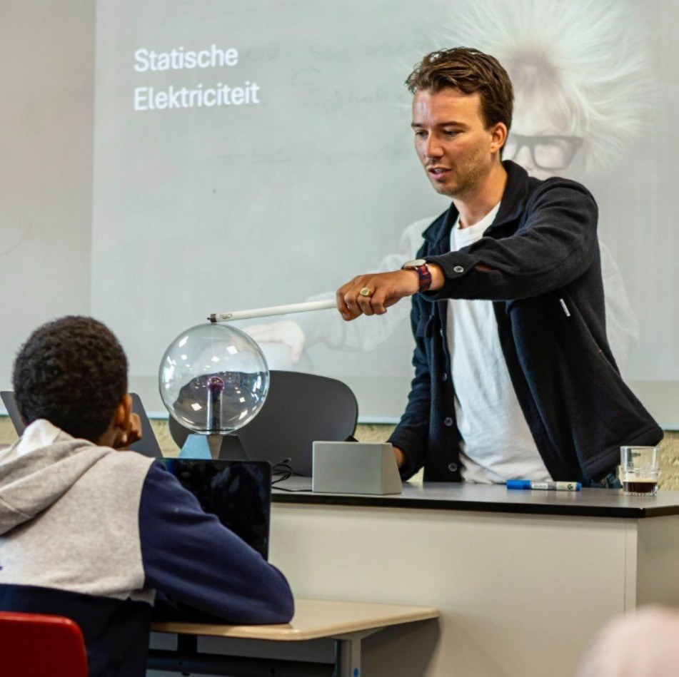

Stop watching your child struggle with abstract concepts and exam anxiety. As a Master's qualified teacher and official Assessment Author, I teach the exact structure examiners want—combined with the mental resilience needed to perform under pressure.

⚡ First session guarantee: No improvement = No charge
Most students work hard but study wrong. Here's what I see too often:
Getting good grades on homework but freezing during exams. They know the material, but anxiety takes over when it counts.
Understanding concepts but losing marks on "explain" questions. They haven't learned how examiners think and award points.
Hours of ineffective studying without a system. They're busy but not productive, and everyone feels frustrated.
Hi, I'm Tim van Batenburg.
If you are looking for a student to help with homework, I might not be the right fit. But if you are looking for a qualified professional who understands the architecture of exams and the psychology of learning, you have come to the right place.
I recently relocated to Stockholm to start a new chapter, bringing with me over 6 years of experience in upper secondary education and a unique philosophy on learning.
"I know how examiners think."
Physics and Math can feel abstract and overwhelming. As a Master of Education (1st Degree Qualification), I have guided hundreds of students through their final exams (VWO/HAVO).
But I don't just teach the material; I create it.
As a freelance Assessment Author for Toetsmij, I design official-style exam questions and grading schemes. This gives me a unique advantage: I know exactly what examiners are looking for. I teach my students not just what the answer is, but how to structure it to maximize points according to RTTI and Bloom's taxonomy.
"Building resilience."
In 2025, I traded the classroom for the tall ship Gulden Leeuw. As a Teacher & Expedition Leader with Masterskip, I sailed across the Atlantic Ocean with 38 trainees.
Why does this matter for tutoring?
Because Physics is a lot like sailing. When you face a difficult problem (or a storm), the natural reaction is to panic or give up. On the ship, I coached students to stay calm, rely on structure, and work through challenges step-by-step. I bring that same "Expedition Mindset" to my tutoring: building the confidence to tackle problems you haven't seen before.
"All in."
I believe in fully committing to new challenges. Since moving to Stockholm, I have been diving headfirst into the culture and language.
While I am mastering Swedish, you might even catch me practicing my "hands-on" mentality part-time at Pom Friterie in the city center.
I'm not just visiting—I'm here to stay and contribute to the international community in Stockholm.
Exam expertise, mental resilience, and professional teaching standards — everything your child needs to excel in physics.
As a freelance Assessment Author for Toetsmij, I don't just know the curriculum—I know exactly how examiners award points.
Physics is like sailing: when conditions get tough, panic sinks you. I teach the mental resilience to perform under pressure.
Native Dutch, fluent English, and a Master's degree—not a student earning pocket money, but a career educator.
Every student receives a personalized strategy combining technical mastery and mental preparation.
We were desperate. Our daughter was getting 4s in Physics despite studying constantly. Tim didn't just teach her the material—he taught her how to think like an examiner. Three months later, she got a 6 on her IB exams and actually enjoys the subject now.
I used to panic every time I saw a Physics exam. Tim's approach is different—he made me practice under pressure until it felt normal. The sailing stories actually helped me understand how to stay calm. I went from failing mocks to a 5 in my final IB.
To ensure quality and personalized attention, I work with a maximum of 8 students per semester.
Book a free 30-minute strategy session. We'll assess where they are, identify the gaps, and create a roadmap to exam success.
If you don't see a clear path to improvement after our first session, it's completely free. No questions asked.